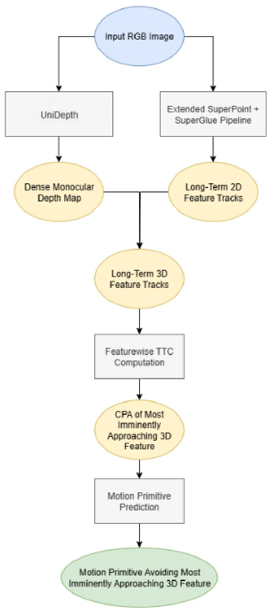
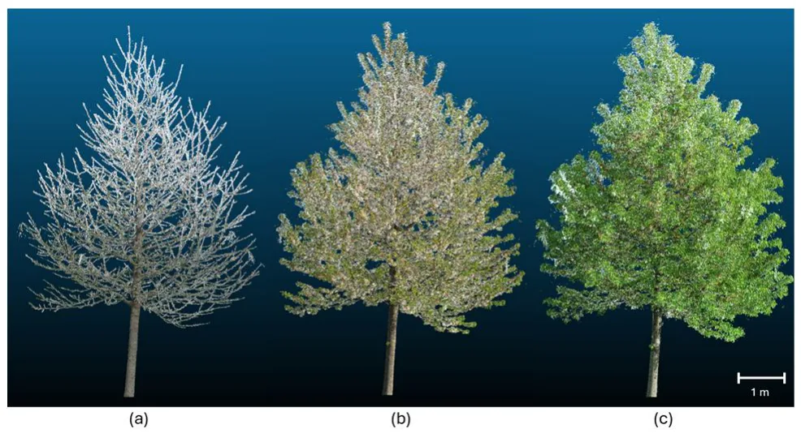
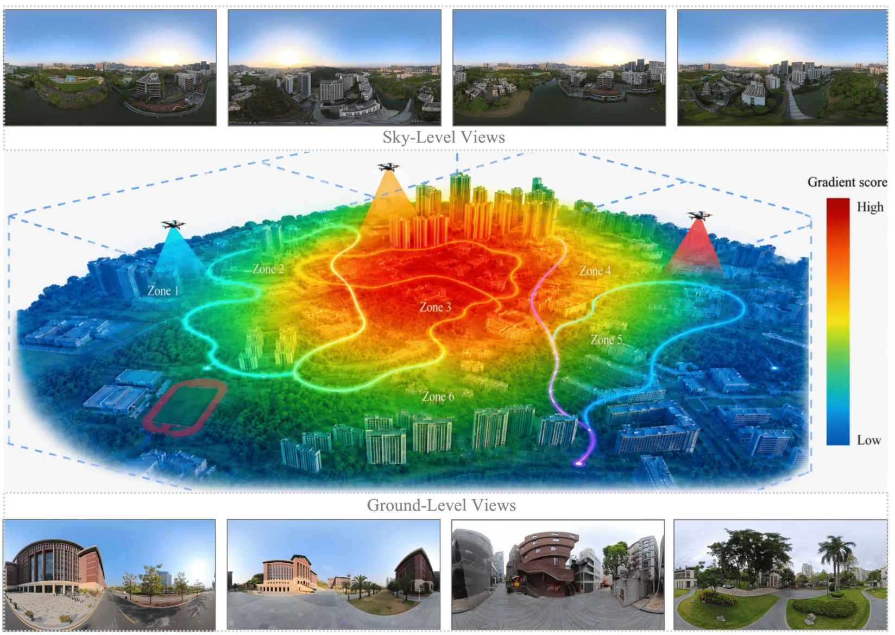
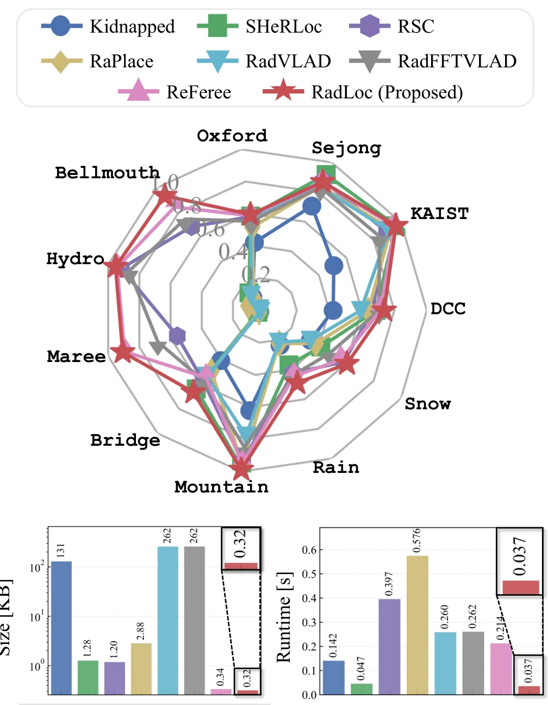
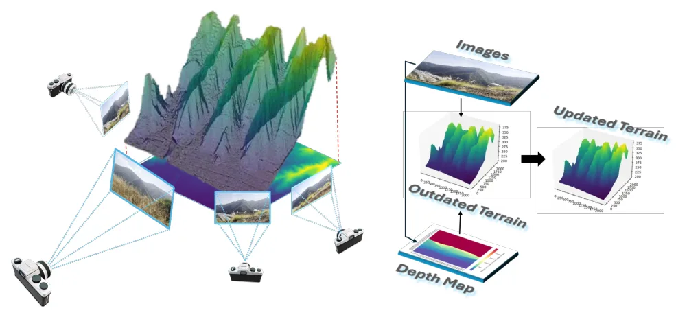
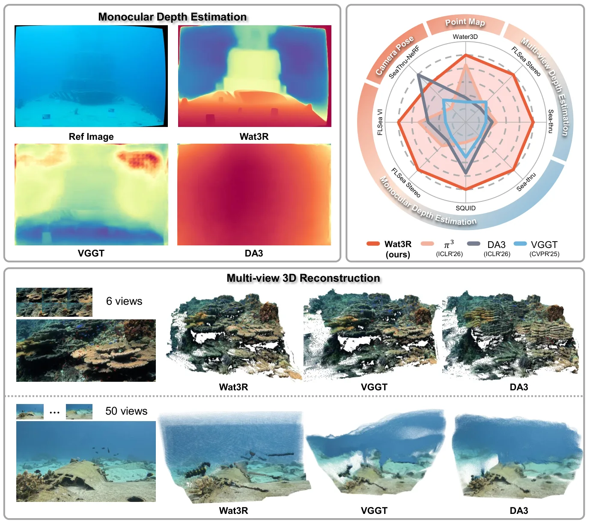

论文预览
新论文 · 日期 2026-07-09 · score 11 · cs.CV
作者：In-Hwan Jin, Hyeongju Mun, Joonsoo Kim, Kugjin Yun
评分 9/10
动态 3DGSMixture-of-Experts非刚体重建形变建模MoE-GS
一句话工作总结：把动态 3DGS 的形变建模拆成多个专家，并系统比较联合优化与独立优化后路由两种集成方式。
本文从 Mixture-of-Experts 视角研究动态 3D Gaussian 表示中的多形变建模问题。作者比较两种不同集成约束：MoDE 将多个 deformation experts 直接接入 deformable Gaussian Splatting pipeline，在共享 canonical Gaussian 表示上联合优化；MoE-GS 则先独立优化多个专家，再通过单独 routing stage…
Dynamic scene reconstruction remains challenging due to the heterogeneous and spatially varying nature of real-world motion. Although recent 3D Gaussian Splatting methods have introduced diverse deformation fo…

新论文 · 日期 2026-07-09 · score 10 · cs.RO, cs.AI, cs.CV, eess.IV
作者：Erik Jagnandan, Mulugeta Haile, Gregory Barber, Pratik Chaudhari
评分 8/10
动态避障Time-to-Collision单目深度Bundle Adjustment移动机器人
一句话工作总结：用预训练单目深度、特征匹配和 BA 估计关键点 TTC，再直接驱动移动机器人避障决策。
该工作提出一个无需机器人专用大规模训练和仿真策略迁移的视觉动态避障 pipeline。系统用 UniDepth 从 RGB 视频估计 dense depth，用扩展的 SuperPoint/SuperGlue 在长序列中跟踪 keypoints，再根据相机内参和预测深度将 2D keypoints 投影到 3D，并以这些点初始化 bundle adjustment。随后计算每个 keypoint 的 time-to…
Dynamic obstacle avoidance in unstructured outdoor environments remains a critical challenge for autonomous mobile robots, particularly when large-scale robot-specific training data and simulation-based polici…

新论文 · 日期 2026-07-09 · score 9 · cs.CV
作者：Stephan Nebiker, Micha Tschanz, Nando Amport, Frederik Baumgarten
评分 6.8/10
UAV 摄影测量三维重建点云精度树冠监测骨架化
一句话工作总结：用低成本 UAV/CraneCam 摄影测量实现毫米级树冠点云，为整树生长监测和骨架化提供数据基础。
论文面向树木整冠 shoot elongation 监测，研究低成本 UAV photogrammetry 和多相机 CraneCam 在真实生长季中的三维重建能力。作者报告使用亚 250g consumer UAV 可在整树尺度达到约 5–6 mm 的 3D 点精度，重建完整性约 92%–98%，并提出 3D 打印 ground-truth branch 来评估细枝等细节结构的重建能力。工作还讨论了数据采集、点云…
Tree growth determines how much CO2 is sequestered from the atmosphere and temporarily stored in woody biomass. At the same time tree growth is affected by increasing temperatures, more frequent drought period…

新论文 · 日期 2026-07-10 · score 8 · cs.CV
作者：Weijian Chen, Weibo Yao, Yuhang Zhang, Xiaolin Tang
评分 8.7/10
全景重建3DGS大规模户外分块训练Pano360
一句话工作总结：针对全景图全局可见导致的 3DGS 分块退化，提出几何与梯度驱动的户外全景分区训练框架。
PanoLOG 研究如何把 3D Gaussian Splatting 扩展到大规模全景户外场景。全景 ERP 图像具有 360° 视场，能降低采集成本，但全局可见性会让依赖局部 camera frustum 的分区策略退化为全局训练。作者提出两阶段 coarse-to-fine 框架：global coarse stage 通过 sky-sphere modeling 和 panoramic monocular…
Scaling 3D Gaussian Splatting (3DGS) to large outdoor scenes is costly in both data acquisition and computation. Adopting panoramic images with equirectangular projection (ERP) can reduce capture effort via th…
新论文 · 日期 2026-07-09 · score 8 · cs.GR, cs.CV
作者：YaQiao Dai, Renjiao Yi, Zhirui Gao, Wei Chen
评分 7.8/10
四面体网格物理仿真Gaussian Spheres拓扑优化仿真资产
一句话工作总结：把 Gaussian/TetSphere 表示直接优化成连通四面体网格，减少重建结果转物理仿真的后处理风险。
HoloTetSphere 针对 physics-ready 3D reconstruction 的传统两阶段流程：先提取表面几何再四面体化，指出后处理四面体化易出错且难以生成拓扑一致网格。作者提出端到端拓扑与几何联合优化框架，将 Gaussian spheres 与 tetrahedral elements 绑定，通过 edge connections 估计连续 opacity field 以进行 differe…
Standard pipelines for physics-ready 3D reconstruction rely on a decoupled two-stage paradigm: extracting surface geometry followed by an error-prone tetrahedralization process. While recent Lagrangian methods…

新论文 · 日期 2026-07-09 · score 7 · cs.RO
作者：Hogyun Kim, Jiwon Choi, Jungwoo Lee, Younggun Cho
评分 8.4/10
雷达定位全局重定位多会话 SLAMplace recognitionphase correlation
一句话工作总结：用轻量雷达描述子做快速地点检索，再用相位相关估计 3-DoF 位姿，服务多会话 SLAM 全局重定位。
RadLoc 是一个 spinning radar 全局定位 pipeline，覆盖从 place recognition 到 3-DoF pose estimation 的完整流程。方法用 1D CA-CFAR 加速预处理，利用 radar image 的近距离主导特性设计紧凑空间 descriptor，并采用 hierarchical coarse-to-fine retrieval 提高检索效率；随后结合 p…
While global localization using spinning radar has gained attention for its robustness to adverse weather and challenging environments, many studies have focused on individual components such as place recognit…

新论文 · 日期 2026-07-10 · score 5 · cs.CV, cs.LG
作者：Xiao Fu, Yue Hu, Meida Chen, Peter Anthony Beerel
评分 6.5/10
地形重建DEM 先验遥感大范围地图灾害响应
一句话工作总结：用旧 DEM 作为几何先验，通过物理像素级对齐提升大范围山火地形图像重建效率和精度。
LTM 面向 wildfire-prone 大范围区域的三维地形地图更新。传统 LiDAR 精度高但昂贵且更新慢，图像方法成本低但受稀疏纹理和有限重叠影响。作者提出利用旧 DEM 作为几何先验的 multi-modal reconstruction framework，通过 physics-based pixel-pixel alignment 在图像和 DEM 数据之间建立对应，减少昂贵特征匹配。给定 posed…
Accurate 3D terrain maps are essential for emergency response when assessing wildfire hazards. However, wildfire-prone regions often span vast areas where conventional reconstruction methods underperform. Airb…

新论文 · 日期 2026-07-10 · score 3 · cs.CV
作者：Jiangwei Ren, Xingyu Jiang, Zijie Song, Wei Xu
评分 6.3/10
水下重建无标注学习半监督多视图深度Water3D
一句话工作总结：用无标注水下视频和跨视角一致性，把通用前馈三维重建模型适配到水下几何估计。
Wat3R 针对水下三维几何估计中光衰减、散射和缺少大规模高质量 3D 标注的问题，提出 cross-domain semi-supervised learning 框架，把空气中的 feed-forward 3D reconstruction 模型适配到水下场景。方法采用 teacher-student 架构，只利用大量未标注真实水下视频学习鲁棒几何表示，并设计 cross-view consistency lo…
Estimating 3D geometry in underwater environments presents unique challenges due to light attenuation, scattering, and the absence of large-scale, high-quality 3D annotations. Pioneering methods rely on massiv…